Date Posted: October 3rd
As a treat to myself before the next school year starts, I decided to take a trip out to the small town of Inveraray. It's quite a tourist-y town, and can you blame them? No matter what direction you're facing, there's a breathtaking view. I slept over in a nearby hostel, and the next day walked up to the watchtower on a hill about an hours walk away.
The view from the top was also incredible, and well worth the walk. I'll link the trip so you can have a go too!
To get here and back I had to take a bus from Glasgow, and an idea I have for next time is to instead of getting off at Inveraray, I'll stay on all the way down to Campbeltown, just for funsies.
The film pictures I got haven't been developed yet, so I'll post those in the next few months, but I have some on digital:
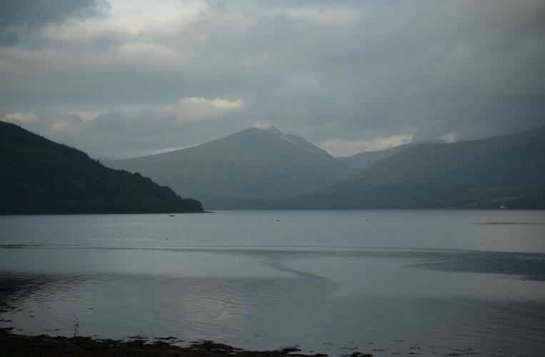
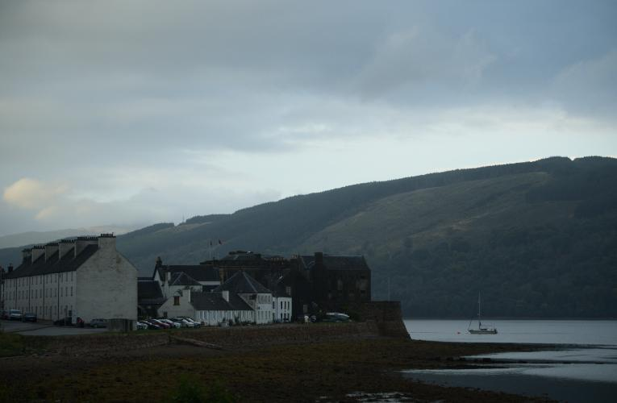
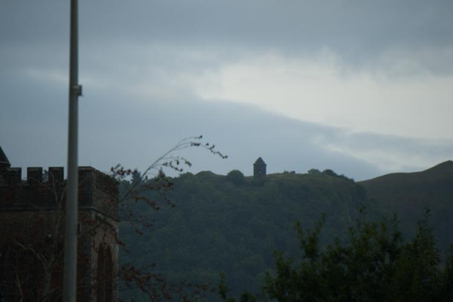
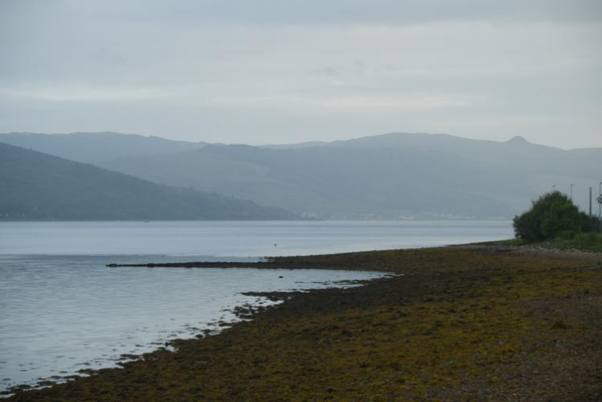
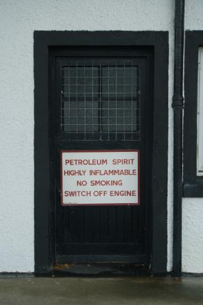
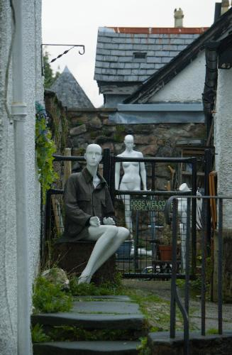
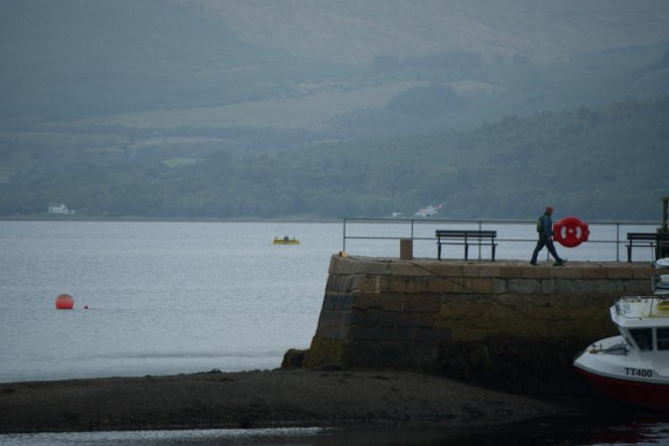
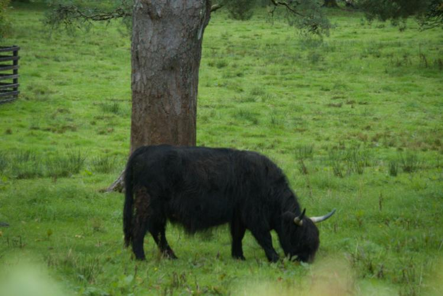
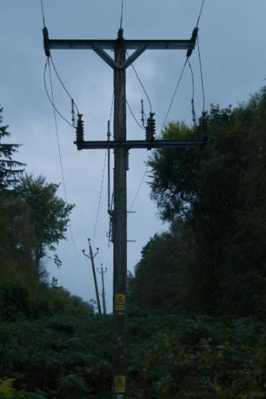
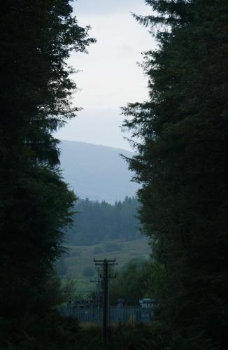
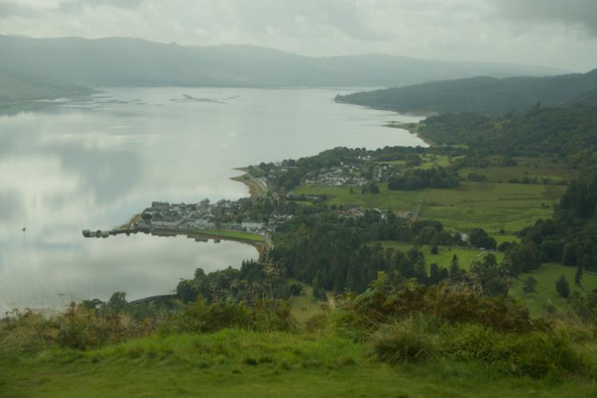
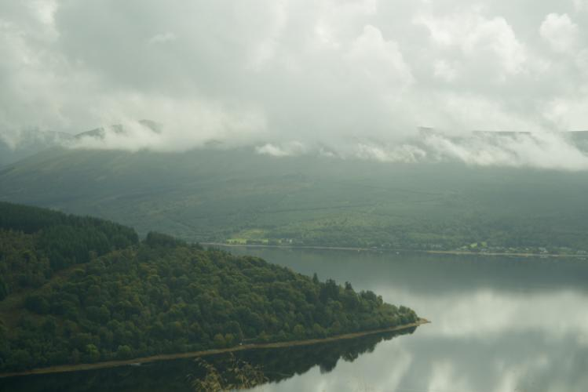
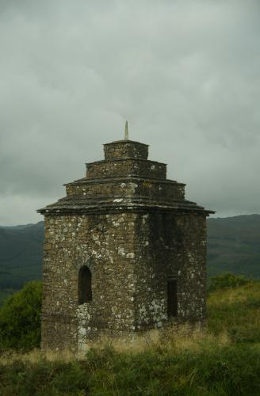
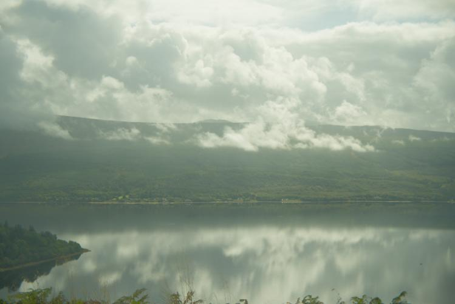
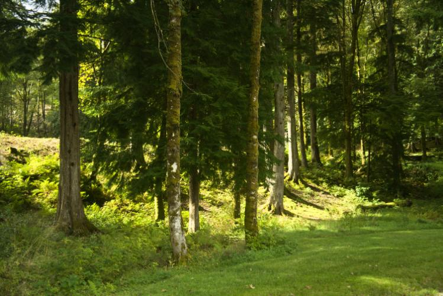
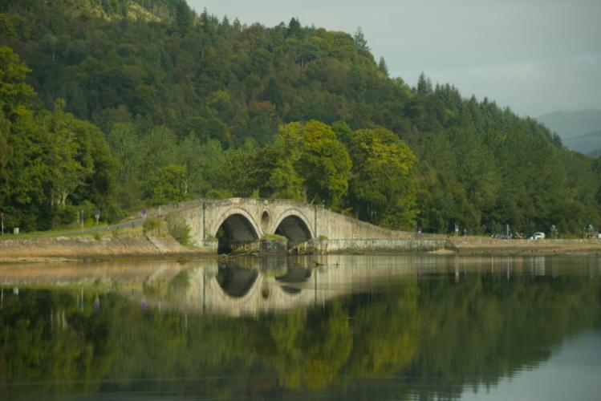
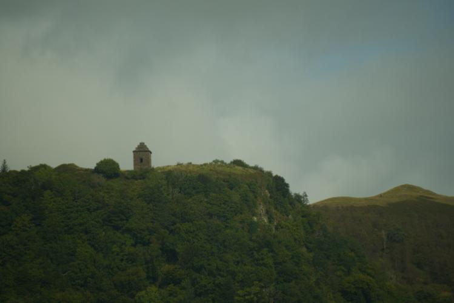
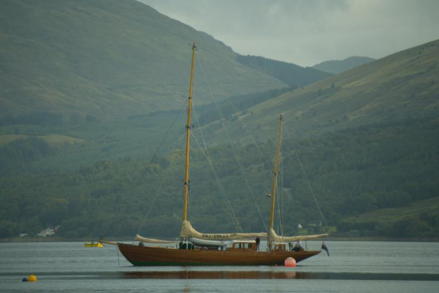
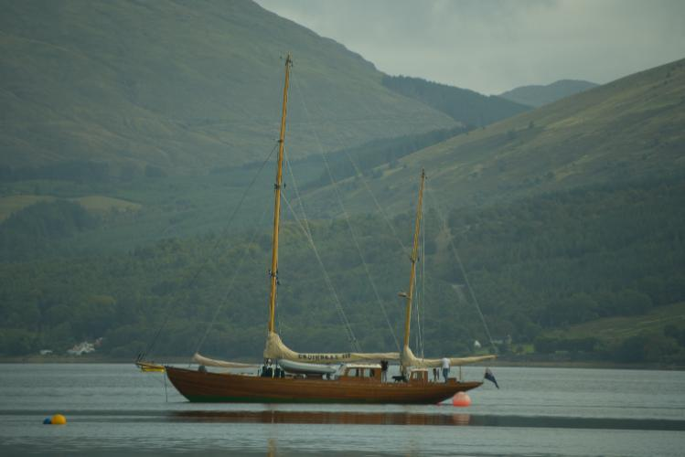
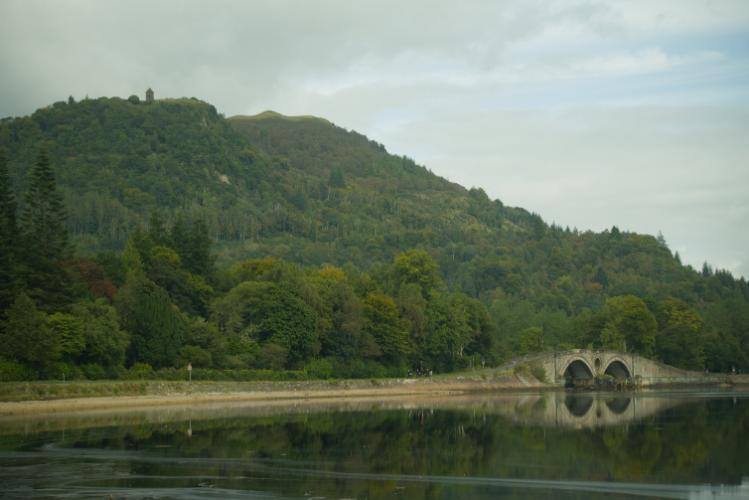
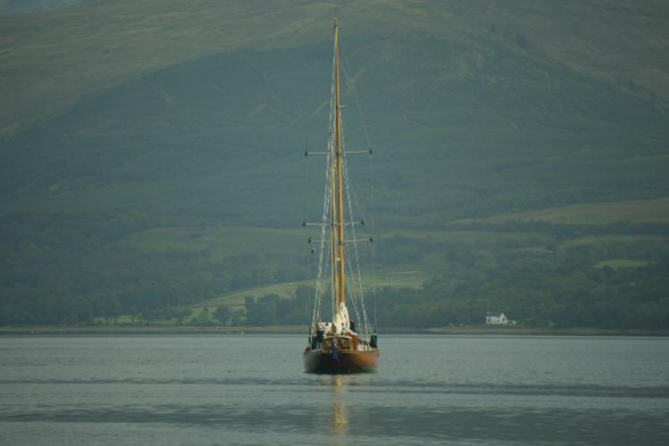
The second I leave for Uni a drive in my RAID setup dies :| I'm gonna have to wait until I'm back at christmas when I can replace the drive, so all I can do is hope no more disks die or the data is gone lol.
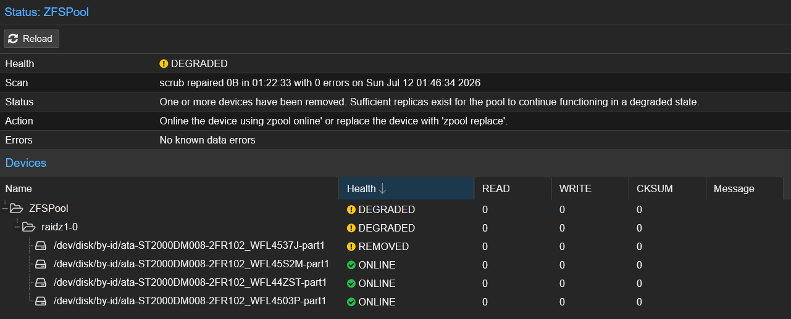
This month I've been playing an old PS2 game called Robot Alchemic Drive (RAD). Its the classic theme of big robots fighting (like Gundam? idk its my first day), except while you're having to control the Meganite as it fights an alien robot, you must also move your character around to see what you are doing. This is because you don't pilot the Meganite, but control it remotely with what have got to be the most obtuse control scheme I've ever seen. The first 20% of the game is just explaining the controls and various moves the Meganite can do.
The game is also well known for its dubious voice acting quality, which has led to one of the side characters to become my absolute favourite: Nanao <333
I suppose Nanao is the games way of showing the impact of war on a civilian population, but when her place of work is blown up as often as it is, it becomes almost comedic. Also the main character is paid in Billions of yen for fighting these robots, but none of it can go to making Nanao's slightly better, the most we can do is blow up a nearby competing supermarket.
Despite my criticisms, its a really good game and I'm definitely gonna keep playing!
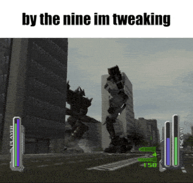
The English dub of Saiki K has mee hooked, I forgot how much I love this show <3.